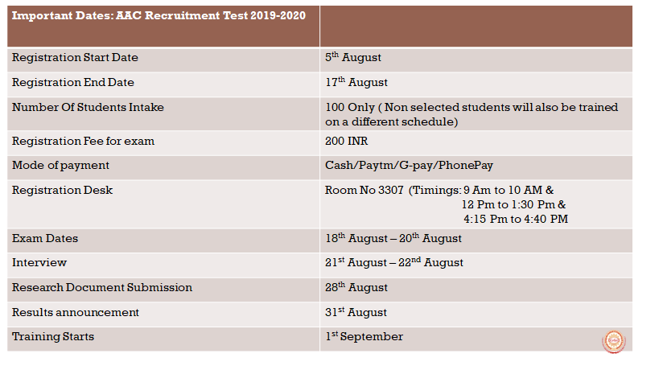
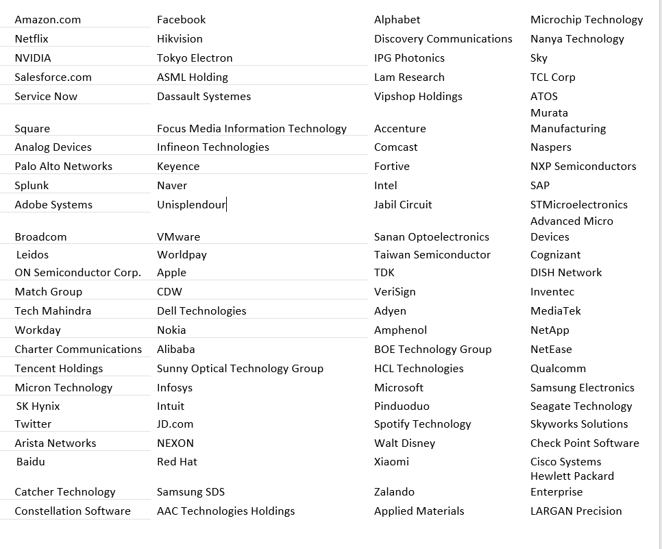

Registration Process:
The candidate should register himself/herself through the self-registration desk at RoomNo.3307 by entering necessary details in the computer. An amount of Rs.200/- should be paid towards registering. The registration fee can be paid through the drop box placed in the room. An acknowledgement will be sent by the end of the day on successful registration.
The candidates are advised to provide the following basic information while registering to do technical projects under AAC or to join the core committee.
Name
Gender
Roll No
Branch
Section
Phone number
Parent phone number
Email-Id
Inter Marks
10th GPA
EAMCET Rank
JEE-mains Rank
School Name
Intermediate College
Permanent address
Date and Time of form filling
Should agree to the Terms and Conditions
Terms and Conditions:
The amount once paid will not be refunded.
Payment doesn’t guarantee your selection.
AAC will fund your projects once you are selected.
For workshops, AAC will charge you bare minimum.
No Re-examination or Re-Interview will be conducted.
Recommendations will not be entertained.
Registering into AAC implies you have agreed to work for extra hours than the regular college timings.
Recruitment Process for technical projects under AAC:
Intake: 120 students irrespective of branch.
Phase-1: Online test
The online test will be conducted for a total of 200 Marks.
Part I: Mathematics (30mcq’s) --- 100Marks
Objective: Technology is changing rapidly and the basis of many of these technological changes is mathematics and logic. Having good basics in mathematics, statistics, and technology will keep one agile enough to adapt to the advances in technology. This would benefit them greatly as they will be posed with many challenges throughout the course of their project.
Syllabus:
- Numbers: How Computers Represent Numbers.
- Arithmetic: Fractions, Proportions, Ratios, and Percentages, Exponentials, Logarithms.
- Algebra: Basic Algebra, Working with Equations, Factoring and Solving Quadratic Equations, Functions and Graphs.
- Geometry and Trigonometry: Angles, Triangles, Calculations with Triangles, Rotations and Reflections.
- Vectors: Vector Motion, Vector Calculations, Matrices.
- Calculus: Differentiation and Integration, Differential Equations, Approximation Methods.
Part II: Aptitude (20mcq’s) --- 80Marks
Objective: Aptitude is a skill which tests the analytical and application ability of person. It is helpful in analyzing their ability to think in complex situations. This tests their skill to formulate new problems and how they apply what they have learned.
Syllabus:
- Number system
- Percentages
- Profit and Loss
- Simple interest and Compound interest
- Equations, Ratio Proportion and Variation
- Averages
- Speed, Time and Distance
- Probability
- Progressions and Functions
- Permutations and Combinations
Part III: Puzzles, Brain Teasers and English (includes Audios, Visuals, 5mcq’s) --- 20 Marks
Objective: This test is included as a part of the analysis keeping in view of the benefits it provides in the overall development. Puzzles require us to take different approaches to try and solve a problem since there’s a lot of trial and error involved. We also learn the value of formulating theories, testing hypotheses, and changing our perspectives when something doesn’t work out according to plan. An English proficiency test is necessary as it has become almost a necessity for people to speak English if they are to enter a global workforce.
Phase-2: Offline rounds
Round 1: Technical interview
Objective: Technical interviews aren’t there to throw impossible questions at you, but rather to assess the extent of your technical knowledge and to gauge how you think. It would help to analyze how you would look at, set about solving a problem and communicate your thinking during the interview.
Round 2:
An assessment on research done by any of the top companies mentioned below should be submitted within a week. It should be submitted as hardcopy (not handwritten). This report should not exceed 20 pages.
Objective: Instead of having students merely select the correct option, written answers compel students to compose their own unique answers to demonstrate their understanding. Here, the candidate is expected to provide an assessment on one of the top companies which would give them an insight on how they work and would reflect the candidate’s views.
Research companies (Choose any 1):

Assessment format:
- Company’s Name
- Company’s Turnover
- Key players of the organization
- Clients, Products and Services
- Company’s basic details (Number of employees, Locations etc)
- Company’s history
- Company’s domains (What technologies do they work on? Explain in brief.)
- Company’s rises and falls
- Company’s current projects (Brief description)
- Company’s values and principles
- Company’s recruitment process
- Latest products released by the company
- Your opinion on that company in brief